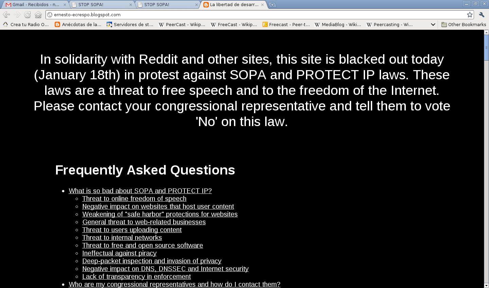

No a SOPA y PIPA
Posted on mar 17 enero 2012 in Anuncios • 2 min read

Gracias e1th0r por las imagenes en contra de SOPA.
El día de hoy fue publicado un artículo que escribí en el diario Ciudad Caracas . Ahí hago un resumen de lo que es SOPA y PIPA y como nos afectaría a todos si son aprobadas.
Presentaré tres vídeos donde se explica con más detalle lo que es SOPA y PIPA, como nos afectará si son aprobadas dichas propuestas de Ley.
Vídeo sobre ACTA: https://youtu.be/5fvwoHKj6cs
Vídeo sobre SOPA: https://youtu.be/VKOwpIOX1rA
Vídeo sobre PIPA: https://youtu.be/D9FnaygIXZA
Otro vídeo que trata sobre los derechos de autor: https://youtu.be/D9FnaygIXZA
Por esa razón el sitio de Debian Venezuela tendrá una página como protesta como lo muestra la figura:

Este blog estará en protesta el día de mañana desde las 8am hasta las 8am del día siguiente como lo muestra la figura:

Y esto por que? pues para evitar que muchos sitios tengan un mensaje de que está censurado:
Hasta ahora los sitios que estarán protestando son:
- Wikipedia
- Identi.ca
- Mozilla
- FreeSoftware Fundation
- Tucows
- XDA Developers
- Cuevana
- Anonymous
- Diaspora
- Twicpic
- Wordpress
Y sigue sumando, si quiere conocer la lista completa la pueden ver aquí.
De latinoamerica se suma Hipatia, Solar, Solve Colibris, Debian-ve, etc.
Los que quieran apoyar la protesta colocando banners o quieren tener una infografía lo pueden ver en los siguientes enlaces:
- Infografía: La pueden encontrar en la página de Derecho a Leer.
- Plantilla de protesta para sus sitios lo pueden encontrar en artículo de alt1040.
- Si sus sitios o blogs usan Drupal, Wordpress o Blogger, tienen una guía de como protestar en el sitio de Cibernauta Latino.
¡Haz tu donativo! Si te gustó el artículo puedes realizar un donativo con Bitcoin (BTC) usando la billetera digital de tu preferencia a la siguiente dirección: 17MtNybhdkA9GV3UNS6BTwPcuhjXoPrSzV
O Escaneando el código QR desde la billetera: